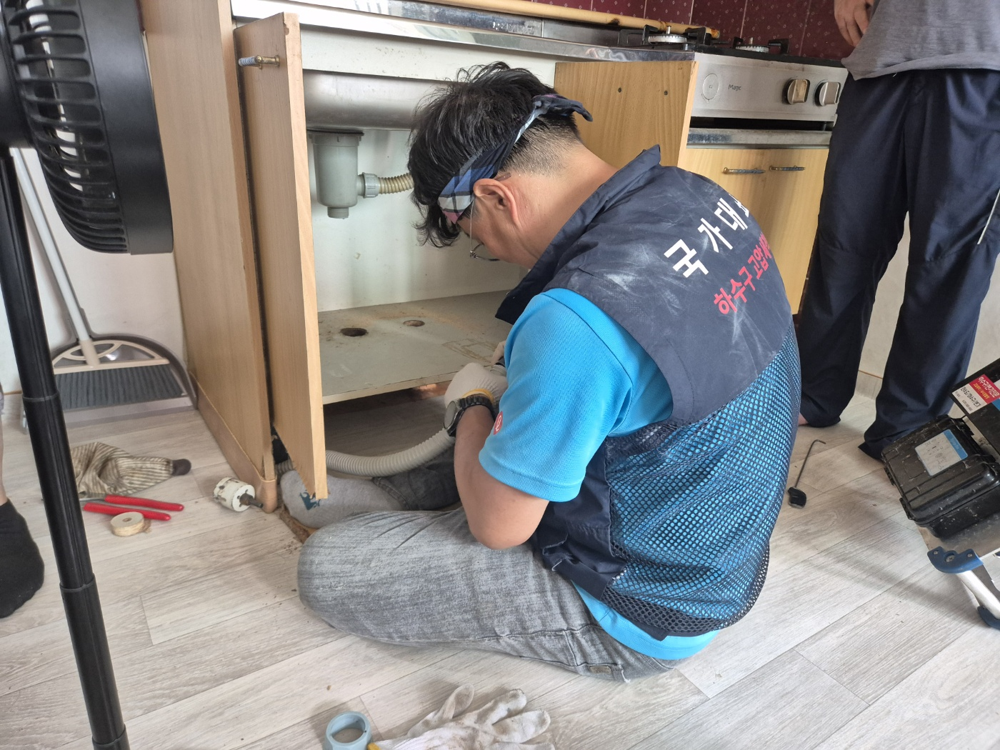
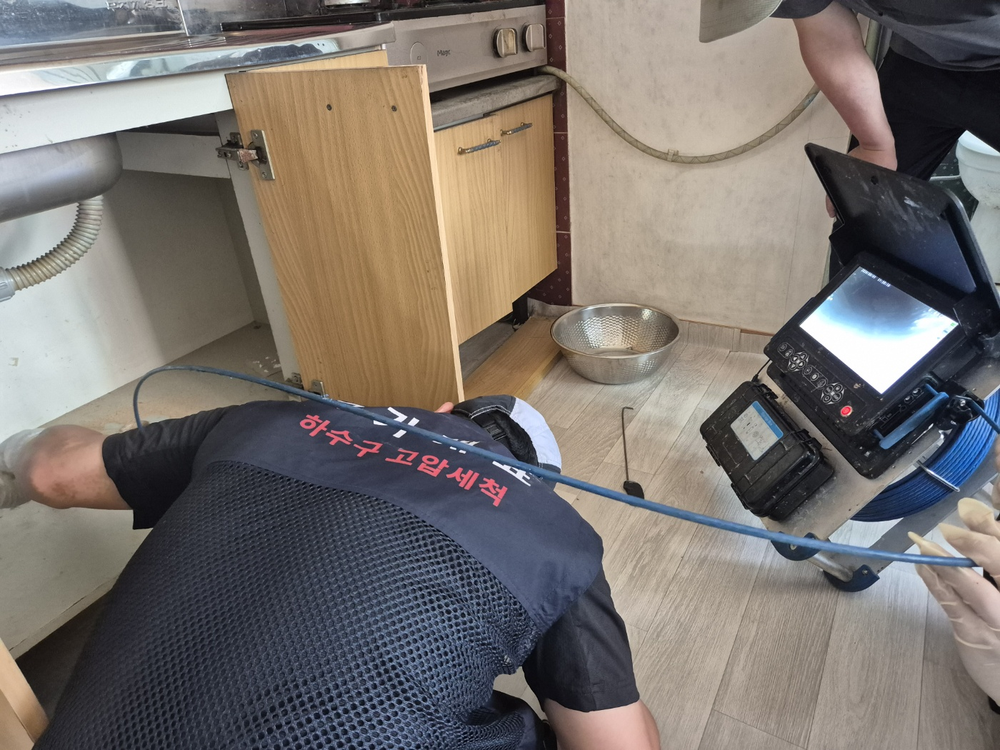
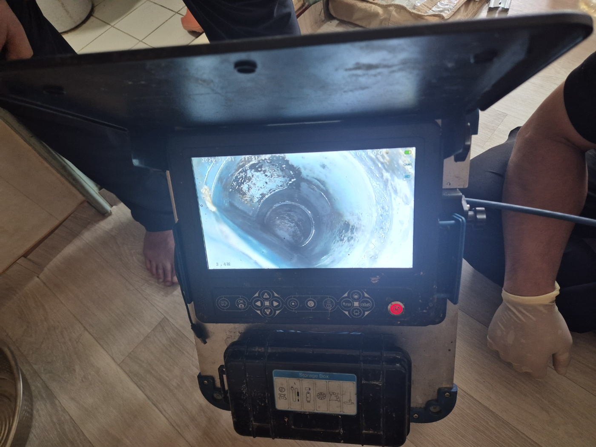
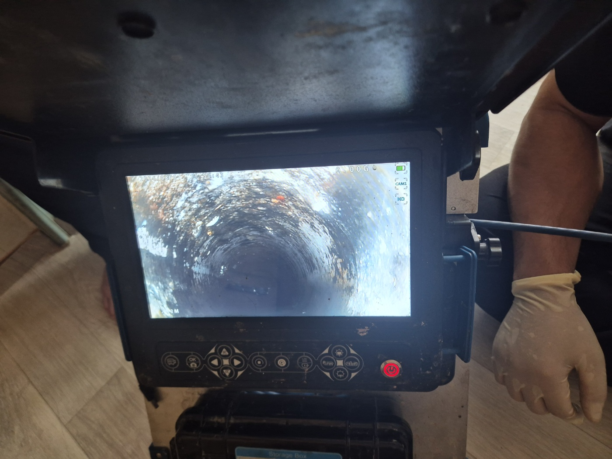
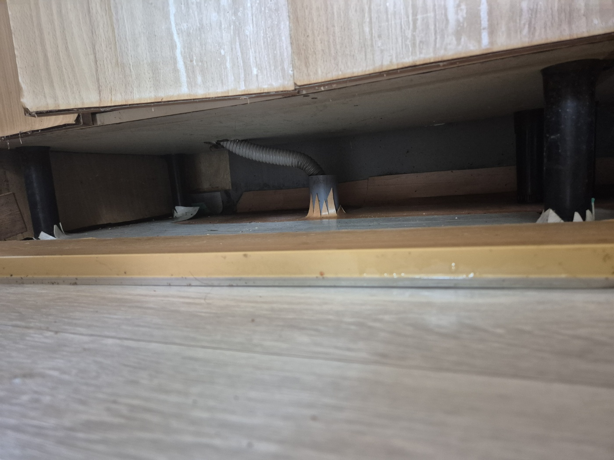

안녕하세요.. 고고고 설비입니다.. 오늘은 평택시 고덕동에 있는 원룸에서 싱크대 물이 잘 안 빠진다는 신고를 받고 다녀온 현장입니다.
싱크대 하부장을 열어보니 배관 이음부 주변이 이미 눅눅하게 젖어있었어요.. 오래 방치된 느낌이라, 바로 하부장 문을 떼어내고 작업 공간부터 확보했습니다. 원룸 특성상 하부장 안이 좁아서 문을 통째로 분리해야 겨우 몸을 넣을 수 있었습니다.
바로 도구를 들이밀기보다, 내시경 카메라 케이블을 싱크대 배관 안으로 먼저 밀어 넣고 모니터 장비를 옆에 세워둔 채로 안쪽 상태를 하나씩 확인하기 시작했습니다. 눈으로 안 보이는 부분을 무리하게 뚫었다가 배관을 상하게 하는 경우가 있어서, 저희는 항상 이 순서를 지킵니다.

화면으로 들여다보니 배관 안쪽 벽면에 누런 기름때가 두껍게 눌어붙어 있었습니다.. 원룸이라도 오래 살면서 쌓인 기름기가 만만치 않더라고요.

케이블을 좀 더 밀어 넣어 깊은 구간까지 확인해봤는데, 안쪽으로 갈수록 이물질이 더 많이 엉켜있는 게 보였어요.

하부장 안쪽에 손이 잘 안 닿는 구석까지 살펴보려고 바닥에 완전히 엎드려서 배관 연결부 상태를 직접 확인했습니다. 연결관이 마루 밑으로 이어지는 구조라 꼼꼼히 봐야 했고, 눈높이를 바닥까지 낮춰야 겨우 이음부가 보이더라고요.

확인된 구간 위주로 이물질을 제거하고 물을 흘려보내며 배수 상태를 확인했습니다. 처음엔 천천히 내려가던 물이 몇 번 반복하니 훨씬 시원하게 빠지더라고요.. 떼어냈던 하부장 문도 다시 제자리에 맞춰 달아드리고 마무리했습니다.
원룸은 세입자가 자주 바뀌다 보니 배관 관리가 소홀해지기 쉬운데, 기름은 싱크대에 바로 버리지 마시고 한 번씩 뜨거운 물을 흘려보내시는 것만으로도 재발을 늦출 수 있습니다.
고고고 설비는 주택, 아파트, 원룸, 상가, 공장의 생활 하수 오수 배관을 관리해 주는 업체입니다. 고고고 설비에 전화 주시면 친절상담 정확한 진단 확실한 해결로 보답해 드리겠습니다!!